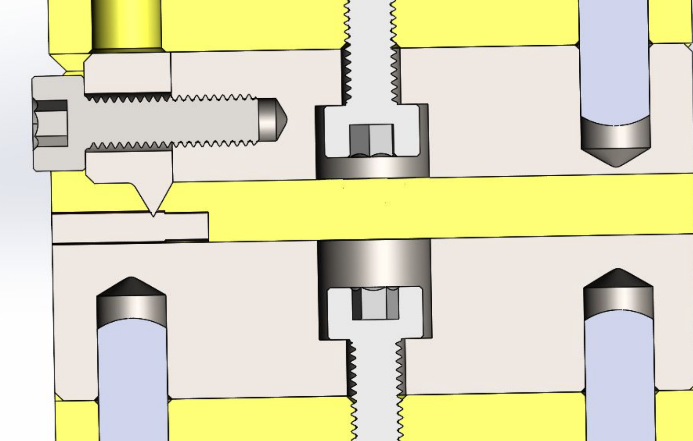

Production Tooling for Stator Coil Bonding
Pneumatic production tooling designed to pierce insulation, activate bond coat through electrical conduction at the contact interface, and improve repeatability in stator coil bonding.

Objective
During my internship at Mainspring Energy, I worked on improving a stator coil bonding process that relied on manual insulation removal. The existing method was time-intensive, inconsistent, and difficult to scale.
The objective of this project was to design a tooling solution that could reliably pierce insulation and engage the heat-activated bond coat through electrical conduction at the contact interface, reducing process time while improving repeatability and usability.

Constraints
The tooling needed to function within an existing production assembly and interface seamlessly with current fixturing and operator workflows.
Key constraints included:
- Applying sufficient force to pierce insulation without damaging the copper wire.
- Integrating into an existing assembly without redesigning upstream processes.
- Supporting repeated use in a production environment.

Design Process
I worked closely with engineers and technicians to understand the current workflow and identify inefficiencies in manual handling.
The design evolved through:
- Iterative CAD modeling of the jaw geometry and fixture layout.
- Prototyping and refining the piercing interface.
- Incorporating feedback from real production use.
- Designing the component to fit within an existing assembly rather than creating a standalone tool.
This required balancing ideal design intent with real-world manufacturing constraints and integration requirements.

Engineering Design
The final system consisted of a pneumatic-actuated jaw fixture designed to:
- Precisely position stator coil wires.
- Apply controlled force to pierce insulation.
- Enable consistent engagement of the bond coat through electrical conduction at the contact interface.
The geometry of the piercing interface was engineered to localize stress and ensure clean penetration while maintaining reliable electrical contact. The fixture was designed as part of a larger assembly, requiring careful consideration of tolerances, mounting interfaces, and accessibility.
A key aspect of the design was retrofitting into an existing system, ensuring compatibility without disrupting upstream processes.

Results & Impact
The tooling replaced a manual, time-intensive process with a controlled, repeatable system.
Key outcomes:
- Eliminated manual insulation stripping.
- Improved process consistency and reliability.
- Reduced operator effort and variability.
- Successfully integrated into an existing production assembly.
Beyond the tool itself, the project demonstrated the importance of designing for:
- Usability on the production floor.
- Clear documentation and detailed drawings.
- Seamless integration into existing workflows.
My Contributions
- Designed and developed production tooling in CAD.
- Translated process requirements into a manufacturable mechanical system.
- Collaborated directly with engineers and technicians.
- Supported testing, validation, and iterative refinement of the design.